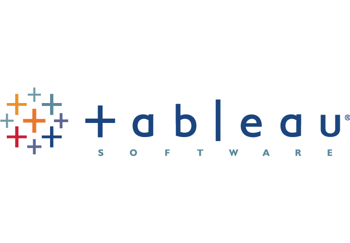

A comprehensive dashboard analyzing 3,000+ US employee records across demographics, performance, termination, and compensation,
built with Power BI techniques including multi-table data modeling (9 tables),
extensive Power Query cleaning, and complex DAX measures.

A Netflix user behavior dashboard analyzing churning status, watch time,
demographics, subscription types, and viewing behavior of 50,000 users.
A dashboard analyzing top Twitch channels' viewership,
follower growth, partnership status, and content maturity.
An Excel dashboard analyzing 21,000+ anime titles from the Anime Database 2022,
built with Power Query cleaning, Power Pivot DAX measures, and macro-linked PDF reports.

Tableau Dashboards for projects on IGN games dataset and World Demographics.
A Python project analyzing 50,000 BMW car sales records from 2010–2024.
A Python bioinformatics project analyzing 50,000+ genes across 285
cancer patient platelet RNA-seq samples.